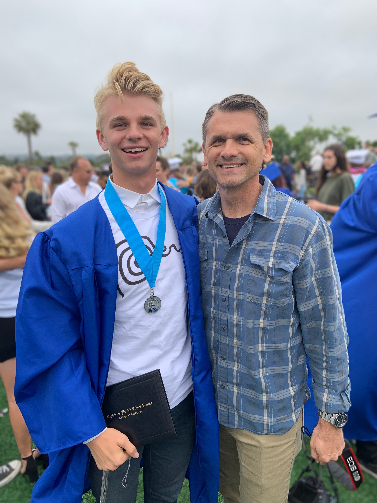
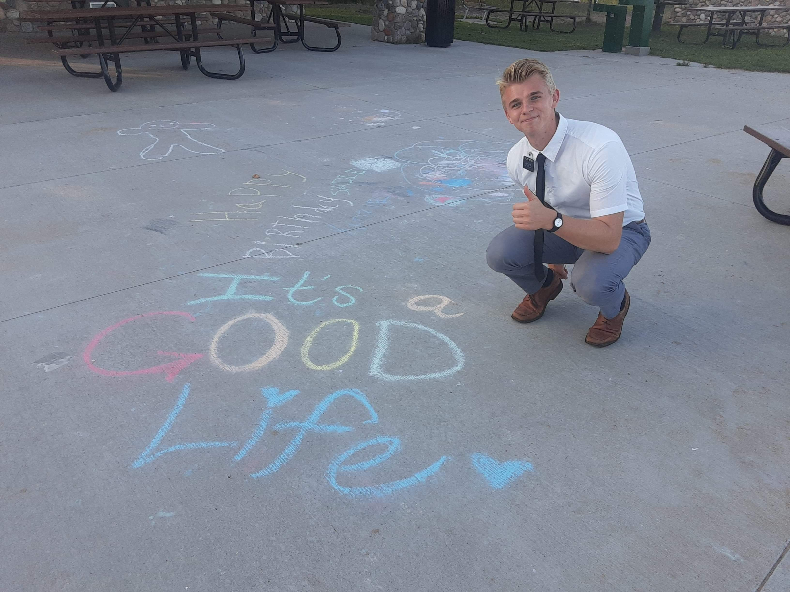
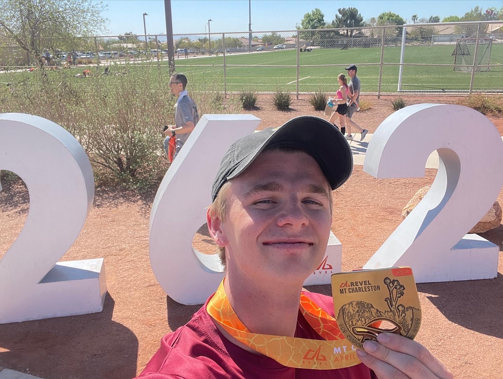

The moment I realized that experiences rather than materialistic things is what adds value to one's life, I have been on the chase to enrich my life as much as possible. I have been able to enrich my life through education, service, hobbies and many other avenues, but I hope this can give you a small glimpse of who I am.
Education

Me and my dad Ron | 2019 June
I attended Dana Hills High School and graduated in the year 2019. Directly following my graduation, I then went on to attend Brigham Young University(BYU) in the summer months. I then took a two year hiatus from my education to serve a mission for the Church of Jesus Christ of Latter-Day Saints.
Following my two year service, I have resumed my education at BYU. My aspirations here at BYU is to hopefully graduate from the Marriot School of Business in Information Systems, then striving to earn a Masters in Information Systems (MISM) here at BYU.
I find greatest value in my education, and for that I have dedicated my life to a constant journey to understand the world around me.
Mission Trip Experience

"It's a Good Life" as seen in Marquette, Michigan | 2020 August
In the spring of 2019 before graduating from High School, I felt it was my calling to leave my family and friends for two years dedicated to serve and teach others. In May of the same year I received a call to serve the people of Lima, Peru for the Church of Jesus Christ of Latter-Day Saints.
After eight months I was sent home for the space of two months to quarantine during the start of the Covid-19 pandemic. I then resumed my mission serving the people of Milwaukee, Wisconsin until I finished in August of 2021.
Serving a mission for the Church of Jesus Christ taught me more than I could learn in a lifeimte, but most of all I learned that love overcomes all fear -- a lesson I will remember for the rest of my life.
Hobbies

"Hard work beats talent when talent doesn't work hard" - Tim Notke | 2022 April
As seen above, I recently ran a marathon down in Las Vegas, but long distance running is not my only hobby. In the field of outdoor activities, I thoroughly enjoy playing baseball, flying kites, downhill skateboarding, cycling, hiking, camping and most of all, surfing. Because my parents encouraged me to find my passion in doing outside activities, I have come to love being out in nature doing anything.
When I am not outside, I love spending time with friends and family playing video games, board games, cooking, reading, drawing and watching movies.
Regardless of what I am doing, if I am doing it with the people I love, I will find the most joy.
facebook: Ethan Hoopes